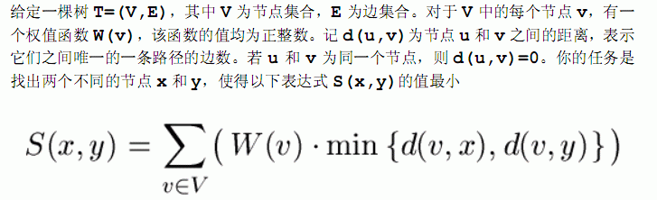
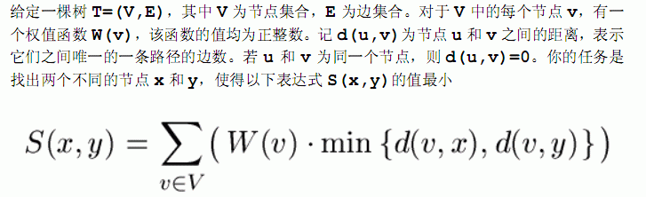

| F.A.Qs | Home | Discuss | ProblemSet | Status | Ranklist | Contest | 入门OJ | ModifyUser Xeonacid | Logout | 捐赠本站 |
|---|
| F.A.Qs | Home | Discuss | ProblemSet | Status | Ranklist | Contest | 入门OJ | ModifyUser Xeonacid | Logout | 捐赠本站 |
|---|

第一行为N，1<N<=50000,表示树的节点数目，树的节点从1到N编号。
接下来N-1行，每行两个整数U，V，表示U与V之间有一条边。
再接下N行，每行一个正整数，其中第i行的正整数表示编号为i的节点权值为W(I),树的深度<=100
将最小的S（x,y)输出，结果保证不超过19^9
选取两个中心节点为2,3